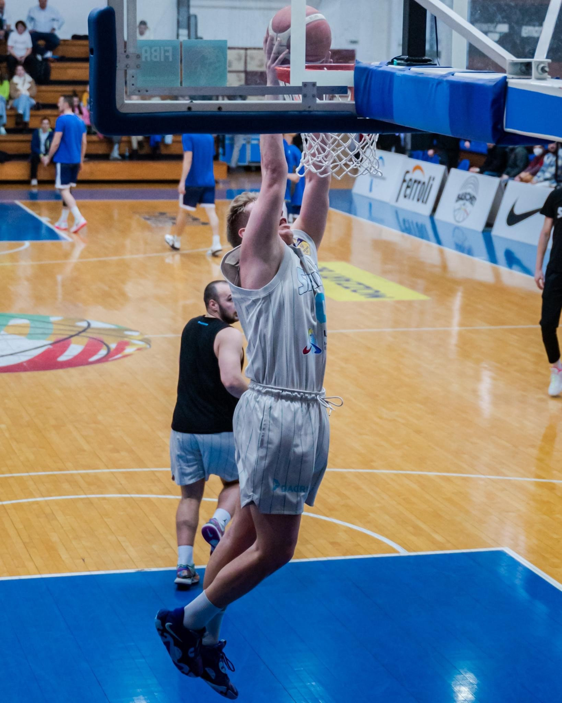
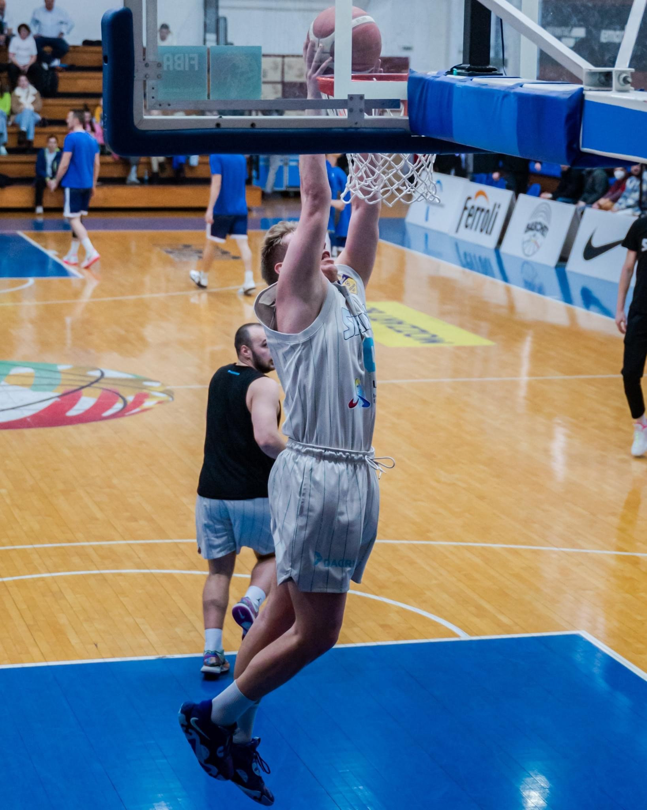
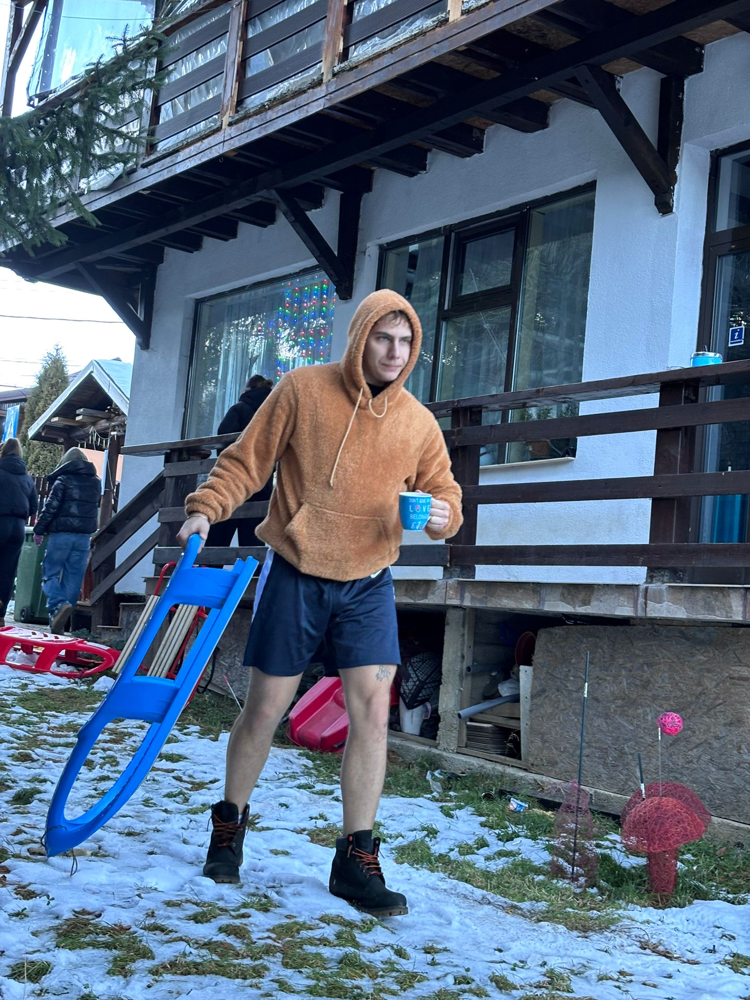
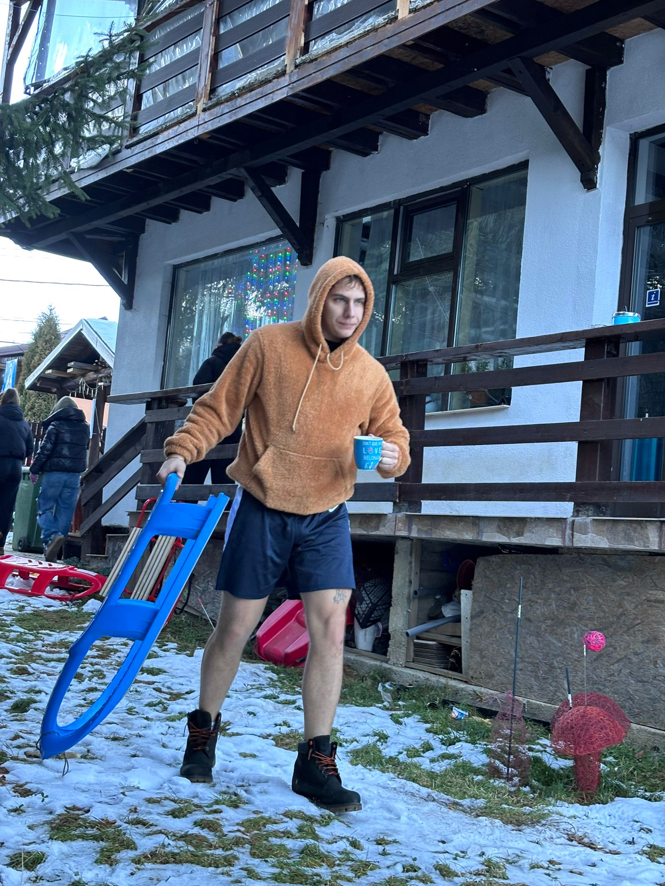

👤 Despre Mine
Salut! Eu sunt un tânăr pasionat de baschet și dezvoltare personală, mereu în căutarea progresului – atât pe teren, cât și în afara lui. Acest proiect a luat naștere din dorința de a ajuta jucători ca mine să-și urmeze planul de antrenament într-un mod organizat, interactiv și motivant.
Baschetul nu este doar un sport pentru mine – este o disciplină care m-a învățat perseverența, colaborarea și importanța fiecărui pas mic în drumul spre reușită. Prin "Swish Plan", vreau să împărtășesc aceste valori și cu alți tineri sportivi.
Încă joc activ baschet, iar experiențele mele pe teren mă ajută să îmbunătățesc constant aplicația. Cred că fiecare jucător merită să aibă un plan care să-l ajute să-și atingă obiectivele, iar "Swish Plan" este aici pentru a face acest lucru posibil.
 

 
